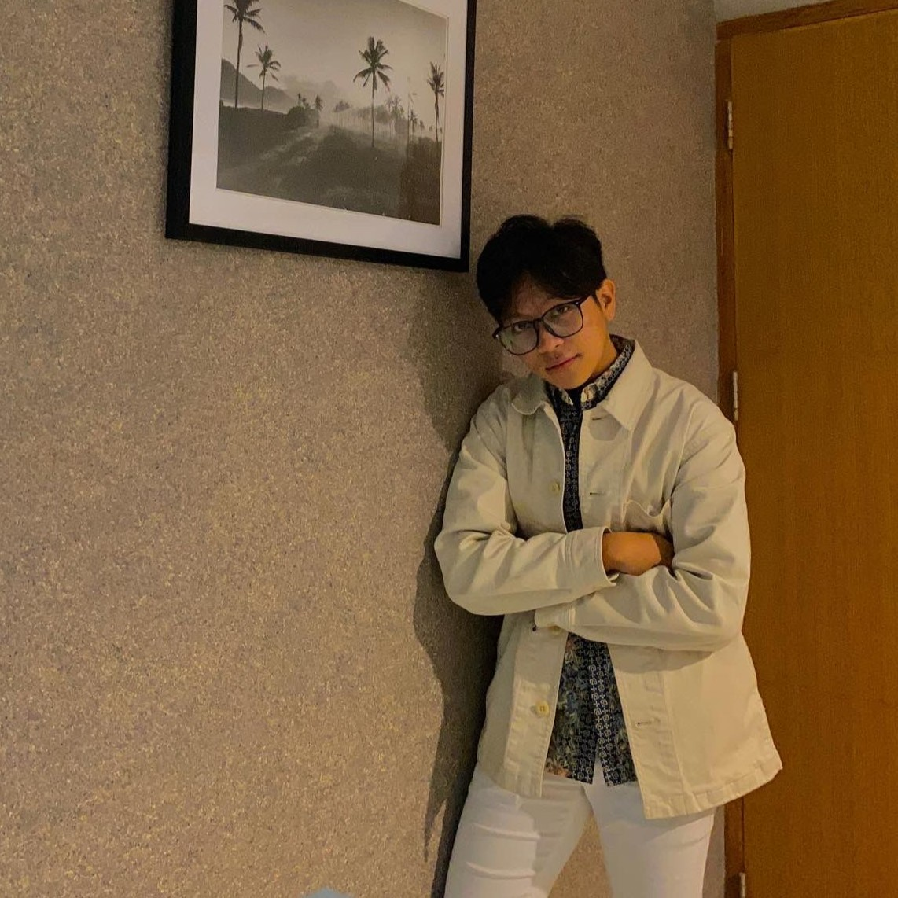

Business-driven analyst turning raw data into strategic decisions. Experienced in dashboards, market analysis, and cross-functional collaboration across commercial and banking sectors.
Interactive dashboard analyzing 5,000+ transactions across 10 branches to uncover revenue drivers and operational gaps.
Attrition analysis on 1,900+ employee records to surface workforce risk patterns and recommend targeted interventions.
Exploratory data analysis on worldwide layoff data using SQL and Power BI to identify the most affected industries and regions.
Open to full-time analyst roles, freelance data projects, and interesting collaborations in BI and analytics.